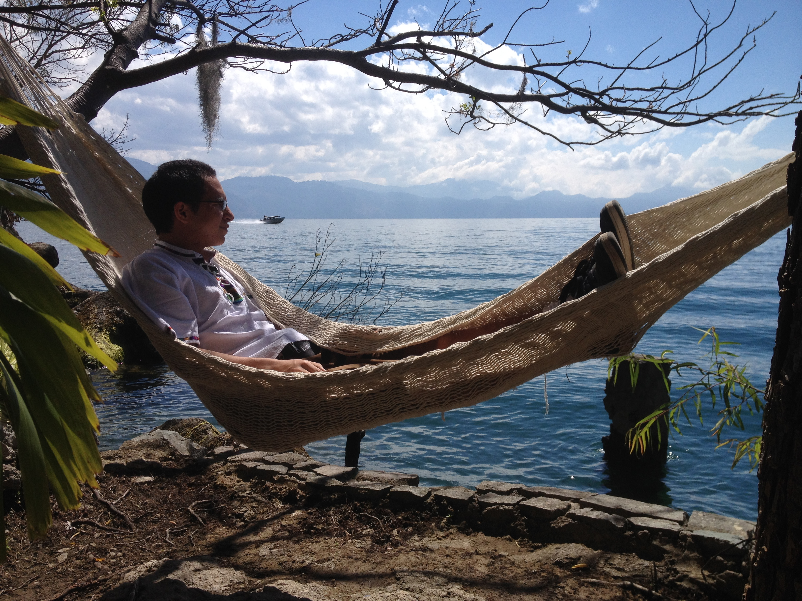
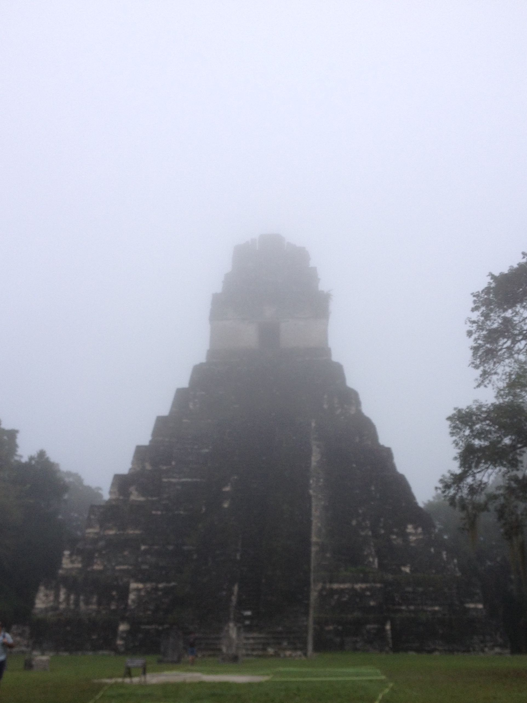
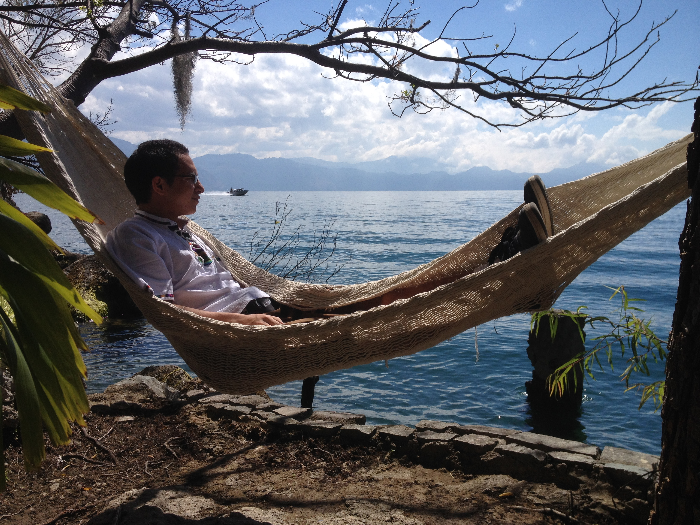
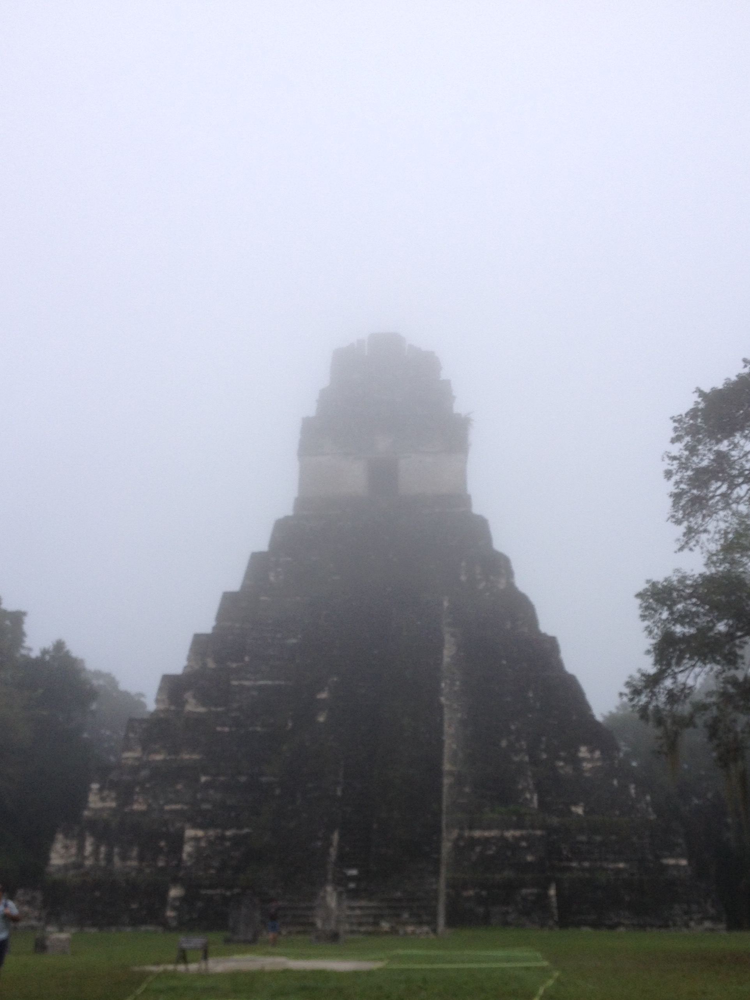

This webpage is meant to serve and an example of my basic knowldge and skills related to HTML5 and CSS
 


I was born in Jutiapa Guatemala and raised by a foster family until I was adopted at age 9 months by my mom. We remain in contact with the foster family via Facebook and visited them when we returned to Guatemala when we visited them 34 years ago. during that trip to my homeland my mom and I explored my country of birth. We went to the Norther Mayan ruins, to the capital of Guatemala. And lake Atitlan, and the original capital city of Guatemala Antigua. I am proud of my Guatemalan heritage but am also glad that my mom adopted me and that I can enjoy the benefits of the good life that we have here in the united states.
We live in Portland Oregon until the first grade when we moved to the Seattle area to be close to all of our family. My grandparents invited us to live with them for a year while my mom searched for a job and we found a new house as I started first grade in their neighborhood. As it turned out we great House mates and my mom and I remained in their home until the time of my grandparents passing two years ago. I had a close relation sup with my grandparents and I helped my mom and her sisters take care of my grandparents when they got elderly. I was with each of them when they passed away.
I had started college at Bellevue community college and was working on a personal fitness training degree when I got very sick. I was unable to continue attending school and I had to quit my job. During my recovery from being sick I taught myself how to build a computer by watching YouTube videos and found my new passion. in a way it was good thing that my illness caused me to stop and rethink my college goals. IT is the path that I want to pressure for my career.